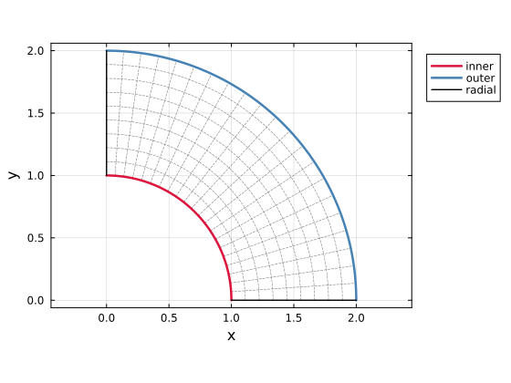
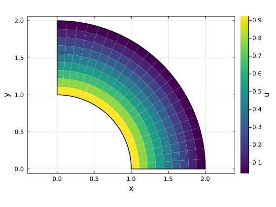

Isogeometric analysis calculations
This page solves a scalar heat-conduction problem on a NURBS patch. The assembly flow is the same as in Finite element calculations: quadrature points are stored in the particle array, update! fills the basis values and physical quadrature measures, and @P2G_Matrix assembles the global matrix.
The difference is the geometric and discrete basis. An IGAMesh uses NURBS control points as grid entries, and the unknown grid.u stores control coefficients, not nodal values. A field value inside the patch is evaluated by the same rational basis functions that describe the geometry.
Quarter Annulus
Problem Setting
Solve
\[-\Delta u = 0 \quad \text{in } \Omega, \qquad u = 1 \quad \text{on } r = r_i, \qquad u = 0 \quad \text{on } r = r_o.\]
The radial sides are left as natural boundaries:
\[\nabla u \cdot \bm{n} = 0 \quad \text{on } \theta = 0,\ \theta = \pi/2.\]
This problem has the analytic solution
\[u(r) = \frac{\log(r_o / r)}{\log(r_o / r_i)}.\]
The circular boundaries are represented exactly by rational quadratic NURBS curves.
Building the NURBS Patch
Create the quarter annulus from two circular arcs and two radial line segments. Tesserae.NURBS.coons_patch blends those four boundary curves into one tensor-product surface. The first parametric direction follows the angle, and the second direction follows the radius.
using Tesserae
using LinearAlgebra
NURBS = Tesserae.NURBS
ri = 1.0
ro = 2.0
center = Vec(0.0, 0.0)
inner_curve = NURBS.arc(center, ri, 0.0, π / 2)
outer_curve = NURBS.arc(center, ro, 0.0, π / 2)
radial0_curve = NURBS.line(Vec(ri, 0.0), Vec(ro, 0.0))
radial1_curve = NURBS.line(Vec(0.0, ri), Vec(0.0, ro))
surface = NURBS.coons_patch(inner_curve, outer_curve, radial0_curve, radial1_curve)
surface = NURBS.elevate(surface, (NURBS.quadratic, NURBS.quadratic))
surface = NURBS.refine(surface, (20, 8))
mesh = IGAMesh(surface)
inner_boundary = boundaries(mesh, 1, 2, -1)
outer_boundary = boundaries(mesh, 1, 2, +1)
plot_patch(surface)
Plot helpers
import Plots
function plot_line!(plt, points; kwargs...)
xs = [point[1] for point in points]
ys = [point[2] for point in points]
Plots.plot!(plt, xs, ys; kwargs...)
end
function patch_line(surface, direction, value; n=120)
other_direction = 3 - direction
lower, upper = Tesserae.NURBS.domain(surface, other_direction)
if direction == 1
[Tesserae.NURBS.evaluate(surface, Vec(value, η)) for η in range(lower, upper; length=n)]
else
[Tesserae.NURBS.evaluate(surface, Vec(ξ, value)) for ξ in range(lower, upper; length=n)]
end
end
function patch_curve(surface, direction, side; n=120)
lower, upper = Tesserae.NURBS.domain(surface, direction)
fixed = side == -1 ? lower : upper
patch_line(surface, direction, fixed; n)
end
function knot_values(surface, direction)
lower, upper = Tesserae.NURBS.domain(surface, direction)
values = unique(Tesserae.NURBS.knots(surface, direction))
filter(ξ -> lower ≤ ξ ≤ upper, values)
end
function plot_knot_lines!(plt, surface; n=80)
for ξ in knot_values(surface, 1)
plot_line!(plt, patch_line(surface, 1, ξ; n); color=:gray, linestyle=:dash, linewidth=0.6, label=false)
end
for η in knot_values(surface, 2)
plot_line!(plt, patch_line(surface, 2, η; n); color=:gray, linestyle=:dash, linewidth=0.6, label=false)
end
plt
end
function plot_patch(surface)
plt = Plots.plot(;
aspect_ratio=:equal,
xlabel="x",
ylabel="y",
size=(560, 420),
framestyle=:box,
legend=:outertopright,
)
plot_knot_lines!(plt, surface)
plot_line!(plt, patch_curve(surface, 2, -1); color=:crimson, linewidth=2.5, label="inner")
plot_line!(plt, patch_curve(surface, 2, +1); color=:steelblue, linewidth=2.5, label="outer")
plot_line!(plt, patch_curve(surface, 1, -1); color=:black, linewidth=1.4, label="radial")
plot_line!(plt, patch_curve(surface, 1, +1); color=:black, linewidth=1.4, label=false)
plt
endQuadrature Data
From the transfer macros, the objects have the same roles as in MPM and FEM: grid stores the control-point fields, gauss_points is the point array, and weights connects each Gauss point to the active control points. For an IGAMesh, generate_particles uses the tensor-product Gauss rule for the patch degree and returns an nq × ncells(mesh) array.
GridProp = @NamedTuple begin
x :: Vec{2, Float64}
u :: Float64
f :: Float64
end
GaussProp = @NamedTuple begin
x :: Vec{2, Float64}
u :: Float64
V :: Float64
end
grid = generate_grid(GridProp, mesh)
gauss_points = generate_particles(GaussProp, mesh)
weights = generate_basis_weights(mesh, size(gauss_points); name=Val(:N))
update!(weights, gauss_points, mesh; measure=gauss_points.V)9×189 BasisWeightArray:
Basis: IGABasis{2, Tuple{Quadratic, Quadratic}}((Quadratic(), Quadratic()))
Basis values: N, ∇NAfter update!, N[ip] and ∇N[ip] are the rational basis value and physical gradient associated with local support index ip. The value V[p] is the quadrature weight multiplied by the physical Jacobian measure.
Assembly
The weak form only has the stiffness term:
\[K_{ij} = \int_\Omega \nabla N_i \cdot \nabla N_j \, d\Omega \approx \sum_p \nabla N_i(\bm{x}_p) \cdot \nabla N_j(\bm{x}_p) V_p.\]
As in the FEM example, the global matrix is assembled with @P2G_Matrix:
K = create_sparse_matrix(mesh; ndofs=1)
@P2G_Matrix grid=>(i,j) gauss_points=>p weights=>(ip,jp) begin
K[i,j] = @∑ ∇N[ip] ⋅ ∇N[jp] * V[p]
endBoundary Conditions
The inner and outer circular boundaries use Dirichlet data. Because IGA uses control coefficients, constant boundary data are imposed by setting all control coefficients on that boundary to the constant value. The radial sides require no extra assembly for the homogeneous Neumann condition.
inner_nodes = supportnodes(inner_boundary)
outer_nodes = supportnodes(outer_boundary)
boundary_nodes = union(inner_nodes, outer_nodes)
grid.u[inner_nodes] .= 1.0
grid.u[outer_nodes] .= 0.0
dofmask = trues(1, size(grid)...)
dofmask[1, boundary_nodes] .= false
free = DofMap(dofmask)
rhs = grid.f - K * grid.u
free(grid.u) .= Symmetric(extract(K, free)) \ Array(free(rhs));Verification
The analytic solution depends only on the physical radius. Transfer the solved control coefficients to the existing Gauss points and compute the maximum absolute error over those points.
exact_solution(x) = log(ro / norm(x)) / log(ro / ri)
@G2P grid=>i gauss_points=>p weights=>ip begin
u[p] = @∑ N[ip] * u[i]
end
max_error = maximum(abs, gauss_points.u .- exact_solution.(gauss_points.x))
round(max_error; sigdigits=3)2.39e-5plot_solution(surface, grid.u)
Solution helpers
function plot_solution(surface, u)
solution = Tesserae.NURBS.ControlNet(
surface.axes,
map(value -> Vec(value), reshape(u, size(surface.points))),
surface.weights,
)
ξs = knot_values(surface, 1)
ηs = knot_values(surface, 2)
shapes = Plots.Shape[]
values = Float64[]
for j in 1:(length(ηs)-1), i in 1:(length(ξs)-1)
corners = (
Vec(ξs[i], ηs[j]),
Vec(ξs[i+1], ηs[j]),
Vec(ξs[i+1], ηs[j+1]),
Vec(ξs[i], ηs[j+1]),
)
points = map(ξ -> Tesserae.NURBS.evaluate(surface, ξ), corners)
push!(shapes, Plots.Shape([point[1] for point in points], [point[2] for point in points]))
push!(values, sum(only(Tesserae.NURBS.evaluate(solution, ξ)) for ξ in corners) / length(corners))
end
plt = Plots.plot(
shapes;
fill_z=permutedims(values),
color=:viridis,
linecolor=:white,
linewidth=0.05,
colorbar_title="u",
aspect_ratio=:equal,
xlabel="x",
ylabel="y",
label=false,
size=(560, 420),
framestyle=:box,
)
plot_line!(plt, patch_curve(surface, 2, -1); color=:black, linewidth=1.5, label=false)
plot_line!(plt, patch_curve(surface, 2, +1); color=:black, linewidth=1.5, label=false)
plot_line!(plt, patch_curve(surface, 1, -1); color=:black, linewidth=1.5, label=false)
plot_line!(plt, patch_curve(surface, 1, +1); color=:black, linewidth=1.5, label=false)
plt
endAPI
IGA
Tesserae.IGAPatch — Type
IGAPatch(degrees, knot_vectors, controlpoint_ids)Define a tensor-product IGA patch.
Tesserae.IGAMesh — Type
IGAMesh(patches, controlpoints[, weights])
IGAMesh(mesh::CartesianMesh; degree, weights=nothing)Define an IGA mesh from patches and control points.
Tesserae.IGABasis — Type
IGABasis(degrees)Basis metadata for tensor-product IGA patches.
Tesserae.boundaries — Function
boundaries(mesh, patch_id)
boundaries(mesh, patch_id, direction, side)Extract boundary IGA meshes from a parent IGA mesh. The boundary patch keeps the parent control-point ids, so boundary assembly targets the same global DOFs.
Tesserae.update! — Method
update!(weights::BasisWeightArray{<:IGABasis}, points::QuadraturePoints, geometry::IGAMesh; measure=nothing, normal=nothing)Evaluate the IGA basis of geometry at the reference points in quadrature_rule(points) and store the result in weights. measure and normal have the same roles as in the FEM method.
NURBS
Types
Tesserae.NURBS.BSplineAxis — Type
BSplineAxis(degree::Int, knot_vector::Vector) -> BSplineAxisOne parametric direction of a B-spline basis, defined by a polynomial degree and a knot_vector.
Tesserae.NURBS.ControlNet — Type
ControlNet(axes::Tuple{Vararg{BSplineAxis}}, points::Array[, weights::Array])Tensor-product spline control net used while building NURBS geometry.
Queries
Tesserae.NURBS.degree — Function
degree(axis::BSplineAxis) -> IntReturn the polynomial degree of a B-spline axis.
degree(net::ControlNet, direction::Int) -> IntReturn the polynomial degree in one parametric direction.
Tesserae.NURBS.knots — Function
knots(axis::BSplineAxis) -> VectorReturn the knot vector of a B-spline axis.
knots(net::ControlNet, direction::Int) -> VectorReturn the knot vector in one parametric direction.
Tesserae.NURBS.domain — Function
domain(axis::BSplineAxis) -> TupleReturn the active parametric domain of a B-spline axis.
domain(net::ControlNet, direction::Int) -> TupleReturn the active parametric domain in one parametric direction.
Tesserae.NURBS.evaluate — Function
evaluate(net::ControlNet, ξ::Vec) -> VecEvaluate a rational tensor-product B-spline control net at the parametric coordinate ξ.
Tesserae.NURBS.boundaries — Function
boundaries(net::ControlNet) -> TupleExtract all boundary control nets.
boundaries(net::ControlNet, direction::Int, side::Int) -> ControlNetExtract one boundary control net. direction is the fixed parametric direction; side is -1 for the lower end and +1 for the upper end.
Primitives
Tesserae.NURBS.line — Function
line(p₀::Vec, p₁::Vec) -> ControlNetCreate a linear curve from p₀ to p₁.
Tesserae.NURBS.polyline — Function
polyline(points::AbstractVector{<: Vec}) -> ControlNetCreate a piecewise-linear curve through the given points.
Tesserae.NURBS.circle — Function
circle(center::Vec{2}, radius::Real) -> ControlNet
circle(center::Vec{3}, radius::Real; normal::Vec{3}=Vec(0,0,1), xaxis::Vec{3}=default_arc_xaxis(normal)) -> ControlNetCreate an exact rational quadratic circle.
Tesserae.NURBS.arc — Function
arc(center::Vec{2}, radius::Real, θ₀::Real, θ₁::Real) -> ControlNet
arc(center::Vec{3}, radius::Real, θ₀::Real, θ₁::Real; normal::Vec{3}=Vec(0,0,1), xaxis::Vec{3}=default_arc_xaxis(normal)) -> ControlNetCreate an exact rational quadratic circular arc. The 2D form lies in the global x-y plane. The 3D form uses normal as the plane normal; θ₀ and θ₁ are measured from xaxis in that plane.
Construction
Tesserae.NURBS.coons_patch — Function
coons_patch(bottom, top, left, right) -> ControlNetBuild a tensor-product surface from four boundary curves. bottom and top run in the first parametric direction; left and right run in the second.
Tesserae.NURBS.loft — Function
loft(sections::AbstractVector{<: ControlNet}) -> ControlNetBuild one higher parametric dimension by stacking matching control nets.
Tesserae.NURBS.sweep — Function
sweep(net::ControlNet, direction::Vec; degree::Int=1, nspans::Int=1)Sweep a control net by translating it along a straight vector.
sweep(section::ControlNet, trajectory::ControlNet)Sweep a section along a trajectory curve by tensor-product translation.
Tesserae.NURBS.revolve — Function
revolve(section::ControlNet, axis_point::Vec, axis_direction::Vec, angle::Real=2π)Revolve a 3D curve or surface around an axis. The added parametric direction is a rational quadratic circular arc.
Degree and Knot Operations
Tesserae.NURBS.elevate — Function
elevate(net::ControlNet, degree::Int; direction::Int) -> ControlNetRaise one parametric direction of net to the target polynomial degree without changing the represented geometry. The target degree must not be lower than the current degree. Rational nets are elevated in homogeneous coordinates, so both control points and weights are transformed.
elevate(net::ControlNet, degrees::Tuple{Vararg{Int}}) -> ControlNetRaise each parametric direction of net to the corresponding target polynomial degree. The d-th entry of degrees is the target degree for parametric direction d.
elevate(net::ControlNet; direction::Int, ntimes::Int=1) -> ControlNetRaise one parametric direction of net by ntimes degree increments. This is equivalent to raising the direction to current_degree + ntimes.
elevate(axis::BSplineAxis, degree::Int) -> BSplineAxisRaise axis to the target polynomial degree without changing its break points or continuity. The target degree must not be lower than the current degree.
Tesserae.NURBS.insert_knot — Function
insert_knot(net::ControlNet, ξ; direction, ntimes=1) -> ControlNetInsert ξ one or more times in a parametric direction without changing the represented geometry.
insert_knot(net::ControlNet, knots::AbstractVector; direction) -> ControlNetInsert each knot in knots in a parametric direction without changing the represented geometry. Repeated entries request repeated insertions.
insert_knot(axis::BSplineAxis, ξ) -> BSplineAxisReturn a B-spline axis with ξ inserted once into the knot vector.
insert_knot(axis::BSplineAxis, knots::AbstractVector) -> BSplineAxisReturn a B-spline axis with each knot in knots inserted in order.
Tesserae.NURBS.refine — Function
refine(net::ControlNet, ninsertions::Tuple{Vararg{Integer}}) -> ControlNetUniformly refine each parametric direction. Each entry gives the number of knots inserted into every nonzero span in that direction.
refine(net::ControlNet, n::Integer; direction::Int) -> ControlNetUniformly refine one parametric direction by inserting n knots into every nonzero span.
refine(axis::BSplineAxis, n::Integer) -> BSplineAxisUniformly refine each nonzero knot span of axis.
Gmsh
Tesserae.NURBS.writestep — Function
writestep(filename, net::ControlNet)Write a curve, surface, or volume control net to a STEP file. Two-dimensional curves and surfaces are embedded in the z=0 plane. The method is provided by the Gmsh extension.
Tesserae.NURBS.viewmesh — Function
viewmesh(net; mesh_size_factor=0.5)Open a 3D curve, surface, or volume control net in Gmsh with a generated mesh. Volume control nets are shown by their boundary surface mesh.